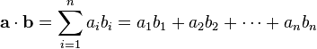

1458. 两个子序列的最大点积
区间 DP：dp[i][j] = 配对 (i,j)（乘积 + max(0, 左上)）或跳过一边的尾元素，取最大。
思路
dp[i][j]：两边分别取前i、j个元素、且都非空时的最大点积；一边为空记为不可行。- 配对
(i−1, j−1)：nums1[i−1]×nums2[j−1] + max(0, dp[i−1][j−1])——max(0,·)让负的旧点积直接放弃、从这对重新开始。 - 也可以跳过一边的尾元素：继承
dp[i−1][j]或dp[i][j−1]；三者取最大。 - 全负数组时答案是最负的一对乘积（不得不配对），该转移自动覆盖。
图解
最优解
1class Solution {2 public int maxDotProduct(int[] nums1, int[] nums2) {3 int m = nums1.length, n = nums2.length;4 // dp[i][j]：两边分别取前 i、j 个元素且都非空时的最大点积5 final int EMPTY = Integer.MIN_VALUE / 2; // 一边为空：不可行6 int[][] dp = new int[m + 1][n + 1];7 for (int j = 0; j <= n; j++) dp[0][j] = EMPTY;8 for (int i = 0; i <= m; i++) dp[i][0] = EMPTY;9 for (int i = 1; i <= m; i++) {10 for (int j = 1; j <= n; j++) {11 // 配对 (i-1, j-1)：乘积加上「之前配过的最好结果，可以是 0（之前没配过）」12 int take = nums1[i - 1] * nums2[j - 1] + Math.max(0, dp[i - 1][j - 1]);13 dp[i][j] = Math.max(take, Math.max(dp[i - 1][j], dp[i][j - 1]));14 }15 }16 return dp[m][n];17 }18}题目
给你两个数组 nums1 和 nums2 。
请你返回 nums1 和 nums2 中两个长度相同的 非空 子序列的最大点积。
数组的非空子序列是通过删除原数组中某些元素（可能一个也不删除）后剩余数字组成的序列，但不能改变数字间相对顺序。比方说，[2,3,5] 是 [1,2,3,4,5] 的一个子序列而 [1,5,3] 不是。
示例 1：
输入：nums1 = [2,1,-2,5], nums2 = [3,0,-6] 输出：18 解释：从 nums1 中得到子序列 [2,-2] ，从 nums2 中得到子序列 [3,-6] 。 它们的点积为 (2*3 + (-2)*(-6)) = 18 。
示例 2：
输入：nums1 = [3,-2], nums2 = [2,-6,7] 输出：21 解释：从 nums1 中得到子序列 [3] ，从 nums2 中得到子序列 [7] 。 它们的点积为 (3*7) = 21 。
示例 3：
输入：nums1 = [-1,-1], nums2 = [1,1] 输出：-1 解释：从 nums1 中得到子序列 [-1] ，从 nums2 中得到子序列 [1] 。 它们的点积为 -1 。
提示：
1 <= nums1.length, nums2.length <= 500-1000 <= nums1[i], nums2[i] <= 1000
点积：
定义a = [a1, a2,…, an]和b= [b1, b2,…, bn]的点积为：
这里的 Σ 指示总和符号。
题面取自力扣当前版本。
数据快照 2026-11-04。题面版权归力扣所有，本站点仅供本人学习使用，请勿对外发布。